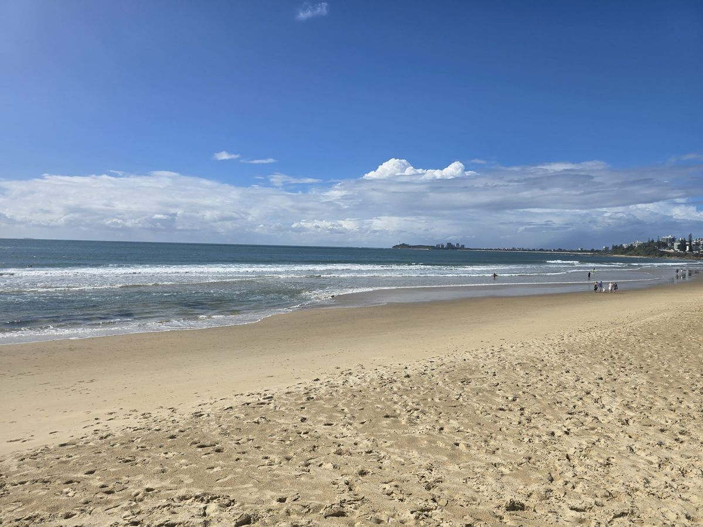
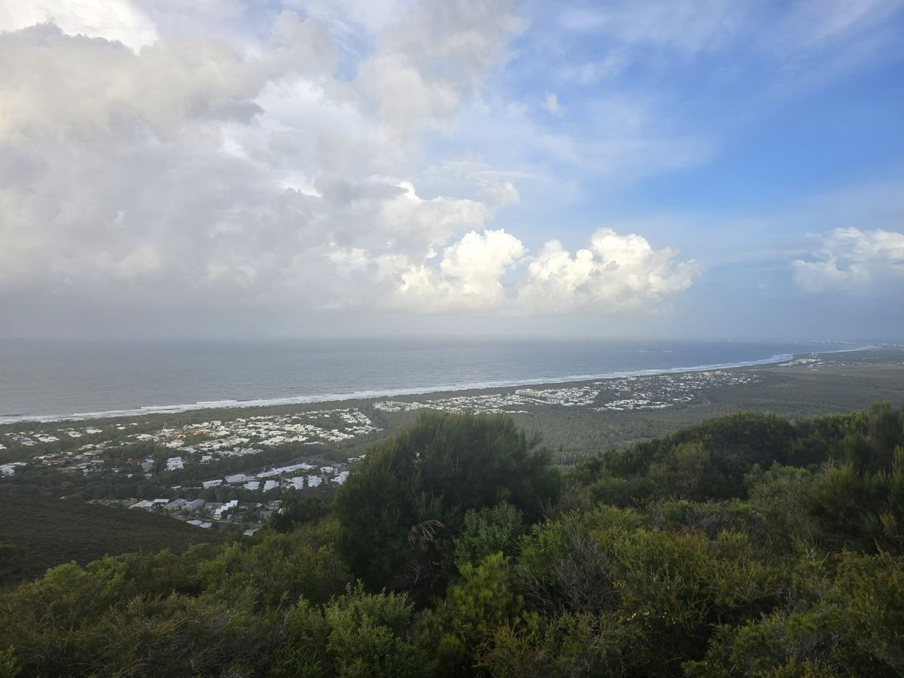
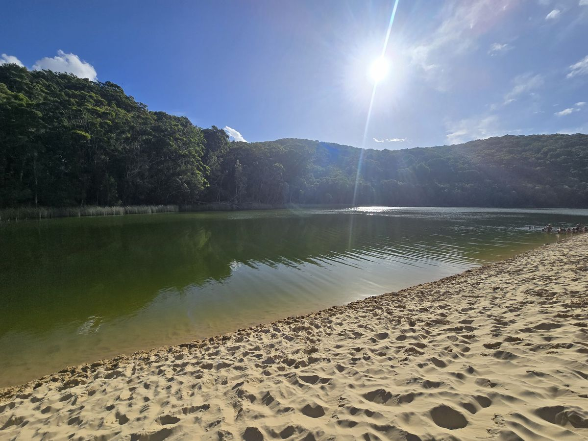
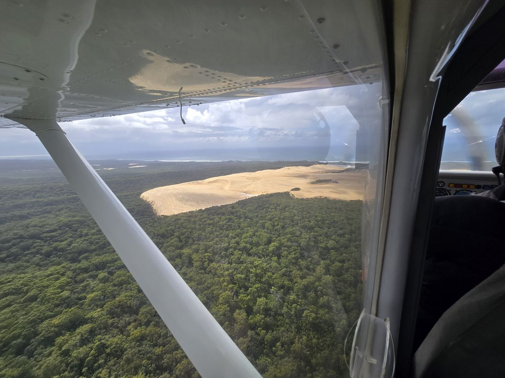
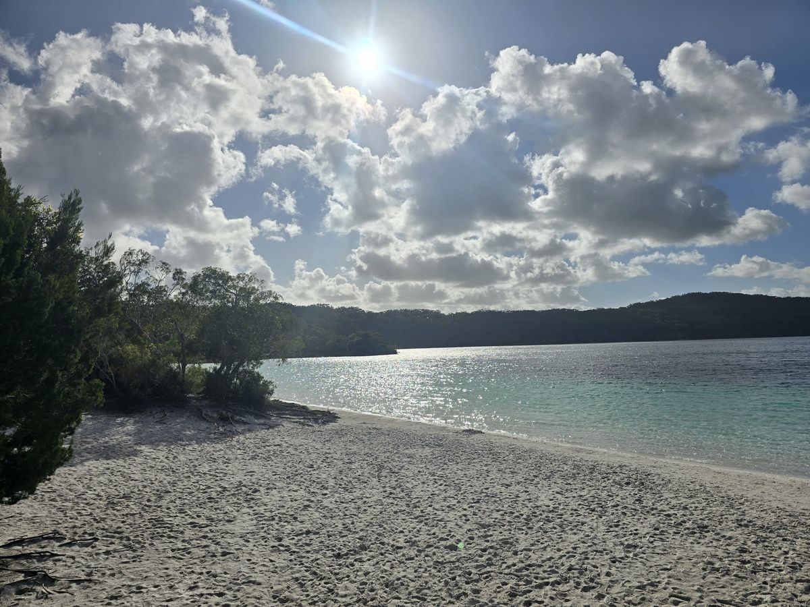
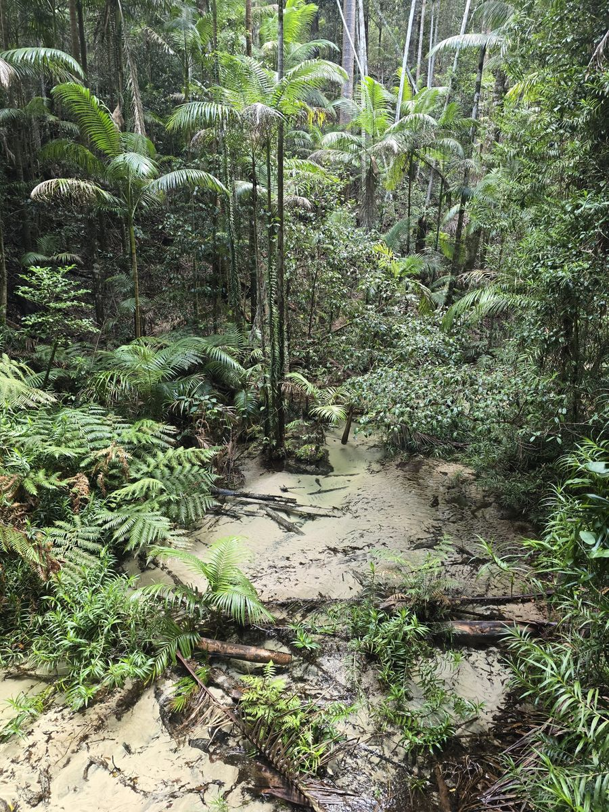
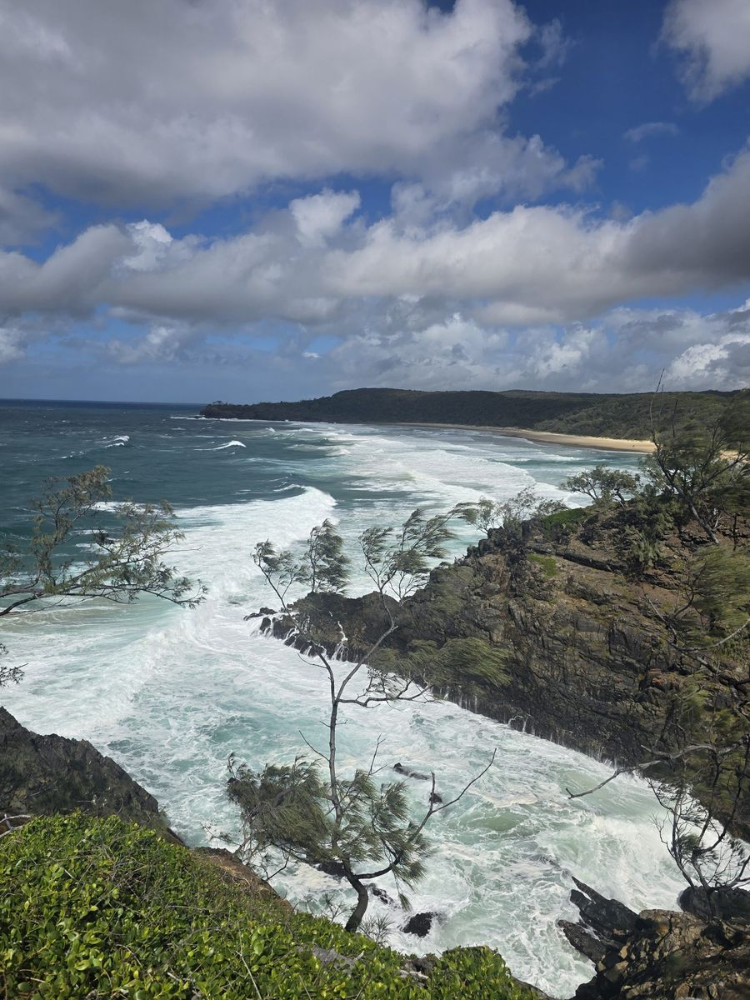
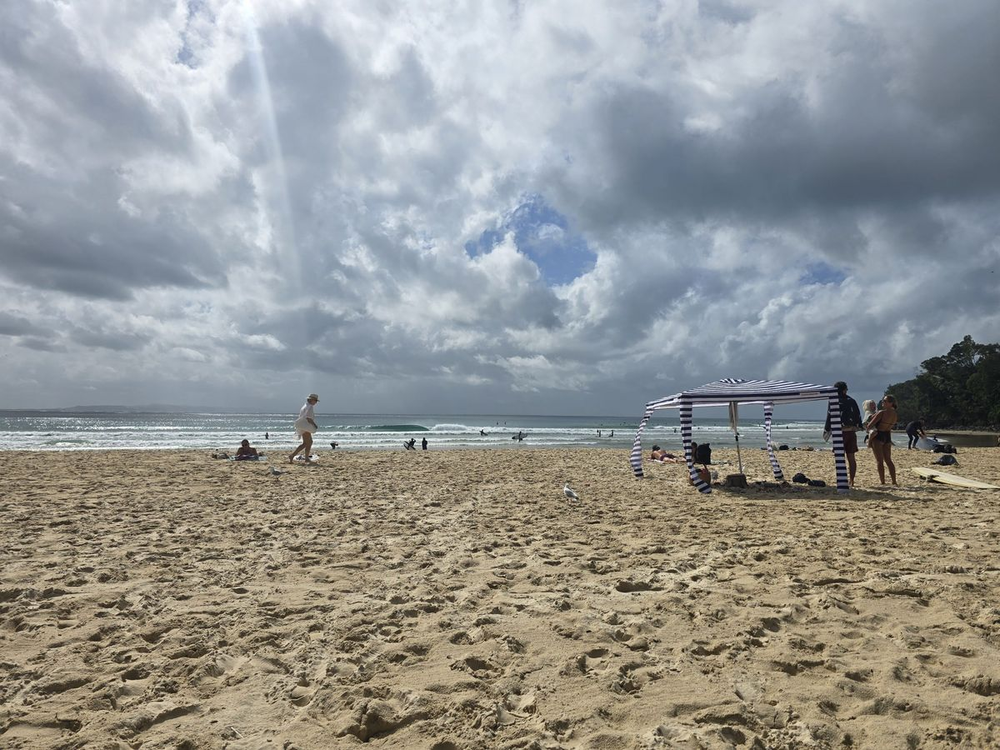
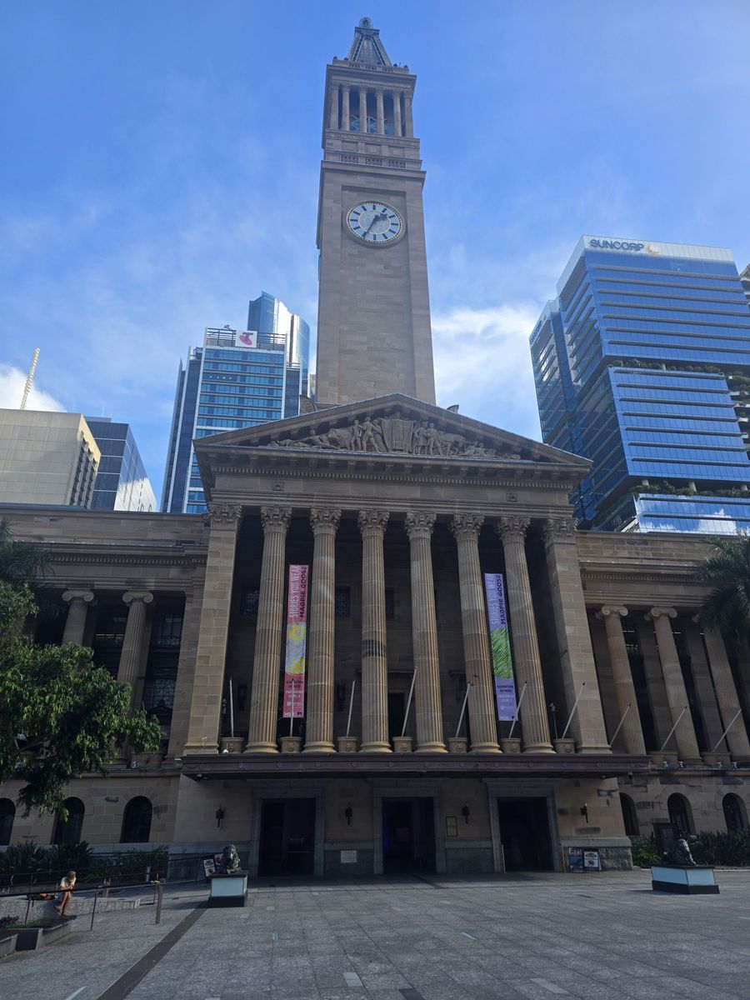

- 10 days
- 3-day K'gari 4WD tour
- Solo
- A$1,592.71 in paid bookings
Ad: some booking links on this page are, or will be, affiliate links. If you book through them I may earn a small commission, at no extra cost to you. I only link to places and trips I actually used and paid for myself, and I say plainly when something wasn't worth it.
Part of my 11 weeks on Australia's east coast and Tasmania. This page covers the Sunshine Coast, Noosa, K'gari (Fraser Island) and my last night in Brisbane only. Each region works as a block on its own, so you can do just this one or link it to others.
Days to allow
I spent 10 days here, from 24 April to 3 May. The first 2 days and a bit were family time on the Sunshine Coast. Then 1 night in Noosa, a 3-day tour on K'gari, back to Noosa until 3 May, and 1 night in Brisbane before an early-afternoon flight north on 4 May.
Take away the family days and the core of it is about 8 days: Noosa, the K'gari tour and a Brisbane night.
I got to the Sunshine Coast by bus from Brisbane on 23 April and stayed that night on the coast. Rich to update: where you stayed on 23 April, what it cost, and whether that day goes on this page or the Byron page.
Rich to update: is 10 days the right amount, or would you allow more or less?
The route at a glance
Sunshine Coast → Noosa → K'gari (3-day 4WD tour, there and back from Noosa) → Noosa → Brisbane → fly to Proserpine for Airlie Beach (see the Whitsundays page).
I didn't hire a car. I got a lift to Noosa, the K'gari tour picked me up and dropped me back, and I used buses round Noosa and back to Brisbane. On 4 May I took the train to Brisbane Airport.
My days in Noosa didn't follow the plan. The kayak tour moved from 30 April to 2 May, the coastal walk moved forward to 30 April, and I stayed in Noosa a night longer, going to Brisbane on 3 May instead of 2 May. Rich to update: why the kayak tour moved (weather or choice?).
What it really cost
I travelled on my own here, so every cost is one person's and nothing was shared. The bookings below were paid in Australian dollars, so I've shown what I paid in AUD.
| Per person (solo) | |
|---|---|
| Family stay, 24–25 April (2 nights) | Free (family stay) |
| Villa Noosa Hotel, 26 April (1 night) | A$150.30 paid |
| Drop Bear 3-day K'gari tour, 27–29 April (2 nights, meals included) | A$727 paid |
| Noosa Lakes Resort, from 29 April | A$518.85 paid |
| Kanu Kapers Everglades kayak tour | A$196.56 paid |
| Brisbane hotel, 3 May (1 night) | Rich to update |
| Scenic flight over K'gari | Rich to update |
| Stand-up paddleboard hire, Noosa | Rich to update |
| Buses, food and pickleball | Rich to update |
| Total paid bookings | A$1,592.71, plus the items marked Rich to update |
Before the trip, my plan estimated about £915–1,310 per person for these days, adding up its daily estimates. That was an estimate, not what I spent. Rich to update: does that estimate include the hotels, and what did the whole block really cost in GBP?
The flight out (Brisbane → Proserpine, Virgin Australia, 4 May) cost A$163.60 paid. It's covered on the Whitsundays page.
Without family or free stays: 2 of my nights were free with family, and family gave me a lift to Noosa, so a visitor will pay more than I did.
- Rich to update: what a visitor would pay for 2 nights on the Sunshine Coast.
- Rich to update: how a visitor would get from the Sunshine Coast to Noosa, and what it costs.
Rich to update: my plan notes that an upgrade on the Drop Bear tour was charged automatically 7 days before. What was the upgrade, and is it included in the A$727?
Day by day
Days 1–3 · 24–26 AprilSunshine Coast, with family


After the best breakfast I'd had all trip, I spent a couple of hours wandering up the beach. Then family picked me up for coffee, a wander, lunch and a swim in the sea, and a really nice burger at Grill'd in the evening.
The weekend was rainy, and mostly family catch-up time with some shopping. When the weather broke I managed a couple of walks up some pretty hills. On 26 April I was dropped off in Noosa, packed for the tour and found a steak dinner. Night at Villa Noosa Hotel.
Day 4 · 27 AprilK'gari, day 1


A 7am pickup (it was late) took me and 28 others to the Drop Bear HQ for a briefing and to sort the luggage. Then we all piled into 4 cars and headed for the island: about 2 hours and a ferry. I drove first on the beach in our 90s Land Cruiser. Ace fun. It took an hour to reach the camp.
After lunch we drove further up the beach and walked to an inland lake for a swim, a sunbathe and a chat. Back at camp we had 20 minutes before sunset, so we wandered down to the beach to watch the staff fishing, and a dingo chilling on the sand. I had an ace room all to myself, with its own shower and loo.
Rich to update: was the Drop Bear tour booked via Viator or direct?
Day 5 · 28 AprilK'gari, day 2


We headed to the north of the island, which is 110 km long. First stop was a creek, where we floated down the river in tubes.
There was a plane on the beach. No one else wanted to go, so I booked the whole plane. Just before take-off four others joined, which made it a lot cheaper. We had a great flight all round the island, and I got the pilot to do some manoeuvres, which scared everyone silly.
Then a huge cliff, where we heard about its dark history: our guide told us that white settlers pushed local women and children off it while the men were away at a meeting, then took over the island.
After that, Champagne Pools: a set of natural rock pools that fill with seawater and bubble like a hot tub. On the way back, as the sun was setting, we stopped at the Maheno shipwreck and had it all to ourselves. I'd already seen it from the air, but up close was pretty cool.
Back at camp I did some more fishing with the staff, then a good night round the fire with lots of stories. We tried for star photos on the beach, but the moon was too bright. Great day.
Day 6 · 29 AprilK'gari, day 3, and back to Noosa


My plan had Lake Wabby and the Pinnacles (the coloured sands) for the last day, with the tour back in Noosa around 5–6pm. My photos from the day show a clear freshwater lake with white sand and a rainforest walk. Night at Noosa Lakes Resort.
Rich to update: what you did on day 3, and the name of the lake.
Day 7 · 30 AprilNoosa coastal walk


I was shattered, so I had a semi-chilled day. I caught the bus into Noosa Heads and did a lovely hike along the coast and through rainforest. A marginal lunch at the RSL and a wander round Noosa. Then a 40-minute bus to pickleball (good games), and I blagged a lift back.
Day 8 · 1 MayStand-up paddle surfing

Great day. I hired a stand-up paddleboard and took it out into the surf. It worked a treat and I caught loads of waves. It was overcast, so I didn't burn. Lunch was maybe the best food I'd had yet: spaghetti with grilled chicken. In the afternoon I wandered to the shops to replace my GoPro, and went for a DJI instead.
Rich to update: where you hired the board, what it cost and where you had that lunch.
Day 9 · 2 MayNoosa Everglades kayak


Kanu Kapers picked me up from the hotel, and we saw some roos on the way. It was very windy, so they drove us further up the river to avoid the open lakes. A lovely day paddling along the river. We didn't see many animals, but it was a nice chilled day. Steak back at the same restaurant as the day before, then a lovely night walk along the beach. I missed the bus, so I waited in the pub for the next one.
Rich to update: where you stayed on the night of 2 May, and what it cost.
Day 10 · 3 MayBack to Brisbane


I had to come back to Brisbane for the flight the next day. An easy bus journey. The hotel was nice. Mexican lunch in town, then pickleball in a sketchy part of town: the games went well, but I was glad to get out before dark. Italian on the river in the evening (lasagne, just OK), a couple of beers on the way home, a live band and a jazz club.
Honestly, I hadn't gelled with Brisbane on my first stop there, and I found the food on this trip pretty poor overall.
Travel out (4 May): train to Brisbane Airport and a Virgin Australia flight to Proserpine (12:45–14:35) for Airlie Beach. That day is on the Whitsundays page.
Weather plan B
- Rain on the Sunshine Coast: the weekend of 25–26 April was wet. I used the breaks in the weather for short walks up the hills.
- Wind on the Everglades kayak: it was very windy, so Kanu Kapers drove us further up the river to paddle there and avoid the open lakes. Worth knowing if your day is windy: the trip still runs, just on a different stretch.
- Overcast in Noosa: a cloudy day turned out to be good for stand-up paddle surfing, as I didn't get burnt.
- Rich to update: what happens on K'gari if the weather turns? Did any part of the tour change because of weather?
Do this / skip this
Do this
- A 3-day 4WD tour on K'gari. Driving the beach yourself, an inland lake, Champagne Pools and the shipwreck at sunset.
- The scenic flight from the beach on K'gari. A great way to see the whole island. It gets cheaper the more people share it.
- The Noosa coastal walk along the coast and through the rainforest.
- The Everglades kayak with Kanu Kapers, if you want a calm, chilled day. Don't expect lots of animals.
Do differently
- Keep the day after the K'gari tour easy. I was shattered the next morning and switched to a semi-chilled day.
- Brisbane: I hadn't gelled with it on my first stop there, and only came back for the flight.
Skip
- Rich to update: anything you'd skip?
Where I stayed
Prices are what I paid for the room. I was on my own, so a couple sharing would pay less each. I booked almost all of these on Booking.com.
| Nights | Place | Paid | What I thought | |
|---|---|---|---|---|
| 24–25 Apr (2 nights) | Family, on the Sunshine Coast | Free (family stay) | ||
| 26 Apr (1 night) | Villa Noosa Hotel, Noosa | A$150.30 | Rich to update | Booking.com (link coming) |
| 27–28 Apr (2 nights) | K'gari Beachfront Eco Retreat | Included in the Drop Bear tour | An ace room all to myself, with its own shower and loo | Part of the tour |
| From 29 Apr | Noosa Lakes Resort, Noosa | A$518.85 | Rich to update | Booking.com (link coming) |
| 3 May (1 night) | Brisbane hotel (Rich to update: name) | Rich to update | Nice | Booking.com (link coming) |
Rich to update: how many nights the A$518.85 at Noosa Lakes Resort covered (the plan had 3 nights, 29 April to 1 May), and which of these, if any, were not booked on Booking.com.